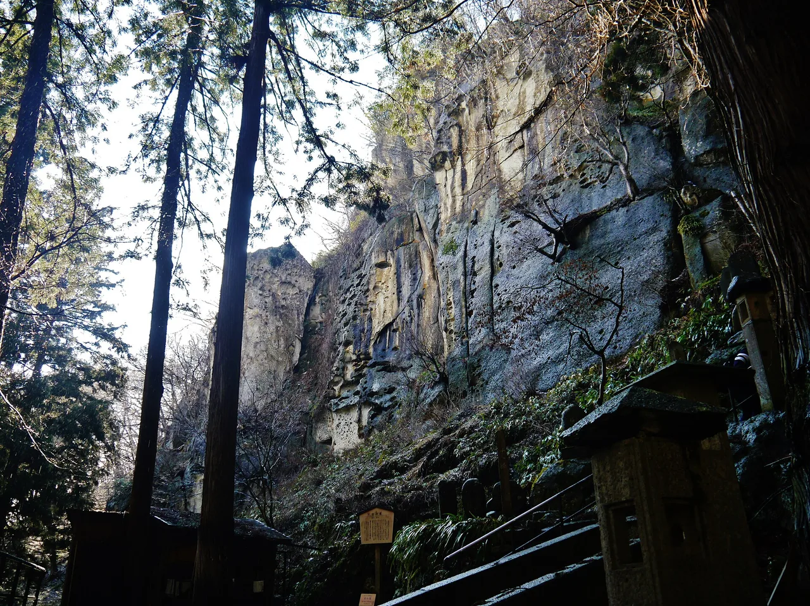

Yamagata 旅遊指南（為日語學習者撰寫）
重點
山形縣位於東北地區、面向日本海，產量約佔全日本櫻桃的70%，並擁有懸崖山寺（Risshakuji）。冬季時，Mount Zao的冷杉樹會結成著名的「雪怪」（juhyo）覆蓋其溫泉滑雪坡。
📍 必看: Yamadera (Risshakuji) · 🥢 必嚐: Yonezawa beef (Yonezawa-gyu) · 來源
山寺廟宇、櫻花，以及藏王山上的雪怪。

🍜 美食 ▰▰▰▰▱ 🏯 文化 ▰▰▰▱▱ 🏙 城市 ▰▱▱▱▱ 🚄 交通 ▰▰▰▱▱ 🌿 自然 ▰▰▰▱▱
🥢 必嚐: Yonezawa beef (Yonezawa-gyu) · 📍 必看: Yamadera (Risshakuji)
🗣 季節の風情を感じる kisetsu no fuzei wo kanjiru
山形融合了靈性十足的山脈與果園山谷。懸崖邊的Yamadera寺廟曾啟發詩人芭蕉，冬季則以藏王著名的「雪怪」——被霜雪覆蓋的樹木——聞名。
必看景點
★ Yamadera (Risshakuji)★ Ginzan Onsen★ Mount Zao / Zao Onsen💎 Dewa Sanzan yamabushi training (Mt. Haguro)💎 Tendo, the shogi-piece town
- Yamadera（立石寺 Risshaku-ji）懸崖寺廟
- Zaō Onsen及其冬季「雪怪」
- 出羽三山聖山
- 銀山溫泉的懷舊街道
必吃美食
★ Yonezawa beef (Yonezawa-gyu)★ Imoni (taro stew)★ Yamagata soba💎 Tamakonnyaku (soy-braised konjac skewers)💎 Dondonyaki (rolled savory pancake on a stick)
山形是日本的櫻花之都；也可以試試芋煮（taro hot pot）。
如何前往與最佳季節
如何前往: 從東京乘坐山形新幹線約2小時30分鐘可到達山形。
最佳季節: 6月至7月可賞櫻花；2月可欣賞藏王夜晚點亮的雪怪。
學個日語
きれいですね。
Kirei desu ne. — "櫻花——山形種植了日本最多的"
在地詞彙
さくらんぼ
sakuranbo — 櫻花——山形種植了日本最多的
💡 小提醒
盡早爬上Yamadera的1,000階階梯，避開人潮與炎熱。
資料來源: Japan National Tourism Organization (JNTO).
事實依官方旅遊資訊查核，觀點為我們所有。